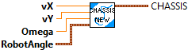
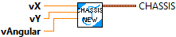

Converts a user provided field-relative ChassisSpeeds object into a robot-relative ChassisSpeeds object.
Parameters:
- fieldRelativeSpeeds -- The ChassisSpeeds object representing the speeds in the field frame
of reference. Positive x is away from your alliance wall. Positive y is
to your left when standing behind the alliance wall.
- robotAngle -- The angle of the robot as measured by a gyroscope. The robot's angle is
considered to be zero when it is facing directly away from your
alliance station wall. Remember that this should be CCW positive.
Returns:
- ChassisSpeeds - Data structure representing the speeds in the robot's frame of reference.

Converts a user provided field-relative set of speeds into a robot-relative ChassisSpeeds object.
Parameters:
- VX - The component of speed in the x direction relative to the field. Positive x is away from your alliance wall. (Meters/sec)
- VY - The component of speed in the y direction relative to the field. Positive y is to your left when standing behind the alliance wall. (Meters/sec)
-omega - The angular rate of the robot. (Radians/Sec)
-robotAngle - The angle of the robot as measured by a gyroscope. The robot's angle is considered to be zero when it is facing directly away from your alliance station wall. Remember that this should be CCW positive. (radians)
Returns:
- ChassisSpeeds - Data structure representing the speeds in the robot's frame of reference.

Retrieve indiviual components from a Chassis data cluster
Parameters:
- Chassis - CHASSIS_SPEEDS Data structure
Returns:
- vx - Forward velocity. (Meters/Second)
- vy - Sideways velocity. (Meters/Second)
- omega - Angular velocity. (Radians/Second)

Constructs a ChassisSpeeds object.
Represents the speed of a robot chassis. Although this struct contains similar members compared to a Twist2d, they do NOT represent the same thing. Whereas a Twist2d represents a change in pose w.r.t to the robot frame of reference, this ChassisSpeeds struct represents a velocity w.r.t to the robot frame of
reference.
A strictly non-holonomic drivetrain, such as a differential drive, should never have a dy component because it can never move sideways. Holonomic drivetrains such as swerve and mecanum will often have all three components.
Parameters:
- vx - Forward velocity. (Meters/Second)
- vy - Sideways velocity. (Meters/Second)
- omega - Angular velocity. (Radians/Second)
Returns:
- Chassis - CHASSIS_SPEEDS Data structure